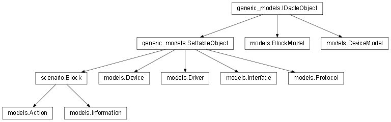

In this python module, you will find the main models of the Majordom App, that is the base classes that are repeteadly used within the server app.
Bases: generic_models.SettableObject
In the model used to design the box, a class deriving from models.Protocol implements all the methods that are necessary to make the box compatible with a new home automation protocol. For instance, every protocol class should implement the function processing an incoming message from the associated modem.
The class models.Protocol defines the minimal public interface that any protocol class should implement, in order to allow other entities to use it.
It should not be directly instantiated.
Any protocol plugin should derive from it. To see what the actual implementation of a protocol looks like, you may for instance refer to the classes protocols.nexa.Nexa and protocols.oregon.Oregon.
Overrides the same method of the :class`SettableObject` in order to dynamically manage the ‘driver’ field of the settings that is specific to Protocols.
Creates and adds to the system a new device whose device_code is the device_code given as argument. The device_key is known by the associated Device Model.
| Parameters: |
|
|---|---|
| Returns: | True if everything went well, False if the device_code given does not exist or the python dictionary returned by models.Device.set() if something was wrong with the settings given. |
| Return type: | bool or dict |
Get a list of devices currently managed by this protocol.
| Returns: | a list of devices currently managed by the protocol |
|---|---|
| Return type: | list of models.Device |
(abstract method) Processes a message sent by the modem to which the Protcol is attached, through its Driver. When it receives an incoming message, the Driver calls the method models.Protocol.process_message of every Protocol that has previously subscribed to it.
The message given as argument has a format that is known by the Protocol. A Protocol cannot work with any modem: it has a compatibility list and knows therefore the format of message it is going to receive from its modem’s Driver.
It must be implemented in any derived class.
Bases: generic_models.SettableObject
In the model used to design the box, a class deriving from models.Driver implements the way the box communicates with an external hardware part. Hardware parts may for instance be radio modems, as it is the case with the plugins.arduino_radio.ArduinoRadio driver.
In the case of the hardware being a modem, this class has then two main features to implement: the process of receiving a message and the process of sending one. In the first case, the driver must implement the way it communicates with hardware parts. For the example of the plugins.arduino_radio.ArduinoRadio, the mini communication protocol used is described in the Arduino Radio custom radio 433MHz modem section
Then, once the message has been recovered from the hardware part, it must be transmitted to the protocols that use this hardware as a communication medium in order to get the actual content of the message. This is implemented through a ‘subscription’ process: protocols subscribe to the driver they want to get their messages from when their associated driver is set.
The class models.Driver defines the minimal public interface that any driver class should implement, in order to allow other entities to use it.
It should not be directly instantiated.
Any driver plugin should derive from it. To see what the actual implementation of a drivers looks like, you may for instance refer to the class plugins.arduino_radio.ArduinoRadio.
Bases: generic_models.SettableObject
The class models.Interface defines the minimal public interface that any interface class should implement, in order to allow other entities to use it.
It should not be directly instantiated.
Any interface plugin should derive from it. To see what the actual implementation of a drivers looks like, you may for instance refer to the class plugins.http_inferface.HTTPInterface.
Bases: generic_models.SettableObject
The class models.Device defines the minimal public interface that any Device class should implement, in order to allow other entities to use it.
It should not be directly instantiated.
Any Device plugin should derive from it. To see what the actual implementation of a Device looks like, you may for instance refer to the class plugins.nexa.NexaDevice.
Bases: generic_models.IDableObject
The DeviceModel class is particularly important in Majordom: it is the way we chose to show the user what devices he was able to add to his home automation system. Moreover, the device models are highly important in the process of adding the device to the system: it is the device models that are called when you want to add a device to Majordom. To sum up, they offer the necessary abstraction layer to the user so that he can know what devices he can add to his system and how to do it.
In particular, the adding_type specifies if the corresponding device must be synced or if will be automatically detected by the system. It is hughly important when it comes to the adding device wizard of the graphical user interface.
The class models.DeviceModel defines the minimal public interface that any device model class should implement, in order to allow other entities to use it.
It should not be directly instantiated.
Any other device model should derive from it. To see what the actual implementation of a device model looks like, you may for instance refer to the class plugins.nexa.NexaDeviceModel.
Bases: scenario.Block
Class used to wrap an action made available by a device.
Execute the action with the given arguments.
Part of the Block facet of an Action: it is the method called when one of the inputs of the Action (considered as a Block) changes.
If the inputs of the action block are relevant, then the action is executed, using the values of the corresponding input nodes as parameters for the execution.
Bases: scenario.Block
Class used to wrap an information made available by a device.
Updates the Information with a new value.
(Internal) Checks if the new value given to update is ok.
Returns the last value of the information.
Returns the values of the information between the start_time and the ed_time parameters.
Bases: generic_models.IDableObject
Similarly to the DeviceModel, the BlockModel is used to show the users the available blocks that he can use is his scenarios. Once again, they represent an abstraction layer between the real block and the user.